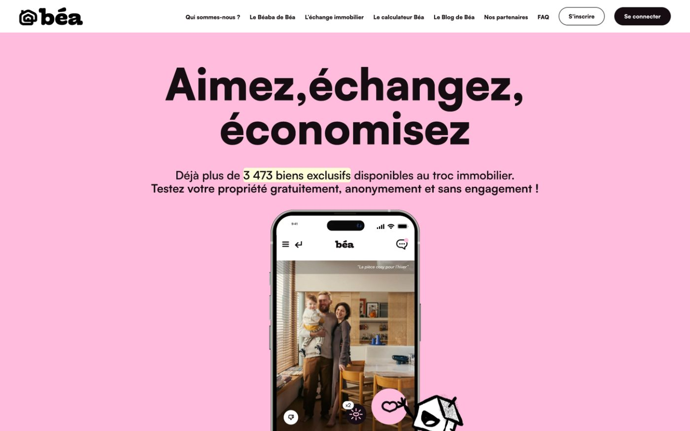
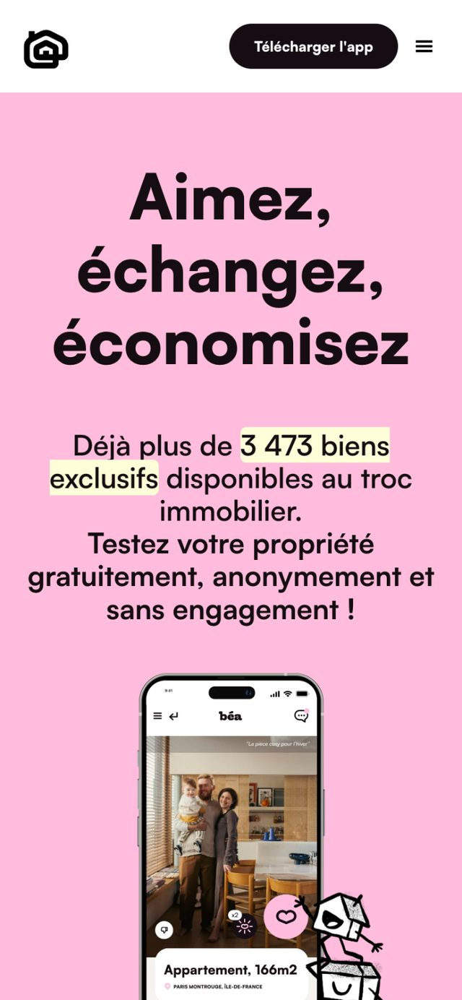

Accueil › Réalisations › Béa
Application · Plateforme
Béa, de l’idée
à 15 000 propriétaires.
Une plateforme d'échange de biens immobiliers hors marché, conçue, lancée et opérée depuis 2020. Présentée comme « La Pépite » sur BFM Business et défendue face aux investisseurs de Qui Veut Être Mon Associé (M6). Lauréate du Pépite Sweet Award 2024.


Le défi
Créer de zéro un service qui n'existait pas : permettre aux propriétaires de vendre hors des grands portails, en toute discrétion, et donner aux professionnels les outils pour travailler ces biens.
Ce qui a été construit
La plateforme complète : espace propriétaires, base de biens hors marché, gestion des mandats, CRM et reporting pour piloter l'activité.
Ce que ça change pour vous
Construire un produit, le lancer et le faire vivre pendant des années apprend ce qui compte vraiment. Votre application est pensée avec cette expérience : l'essentiel d'abord, puis ce que vos utilisateurs demandent.